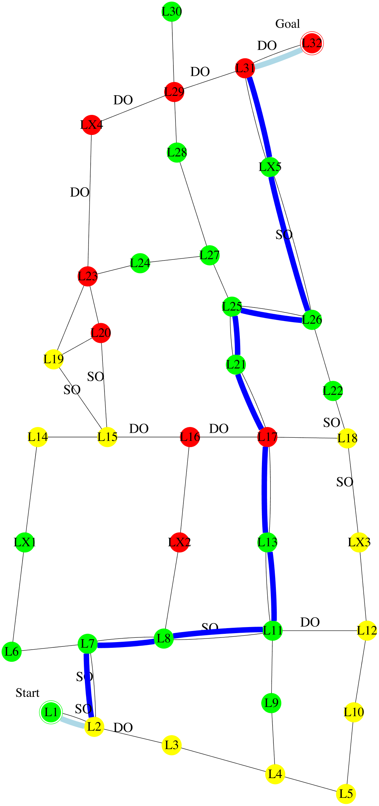

I'm planning to follow this policy . It is expected to have 1.2 collisions; take 131 minutes; and have intrusiveness-penalty of 10: be non-intrusive 8 steps, very-intrusive 3 steps, and somewhat-intrusive 1 step. It has the lowest expected intrusiveness. Alternatively, following this policy

would reduce the collision to 1 collision. However, I didn't choose that policy because it would increase the time to 137 minutes. The decrease in collision is not worth the increase in time. Alternatively, following this policy

would reduce the time to 127 minutes. However, I didn't choose that policy because it would increase the intrusiveness to 13: non-intrusive 8 steps, very-intrusive 4 steps, and somewhat-intrusive 1 step, and increase the collision to 1.4 collisions. The decrease in time is not worth the increase in intrusiveness, and the increase in collision.